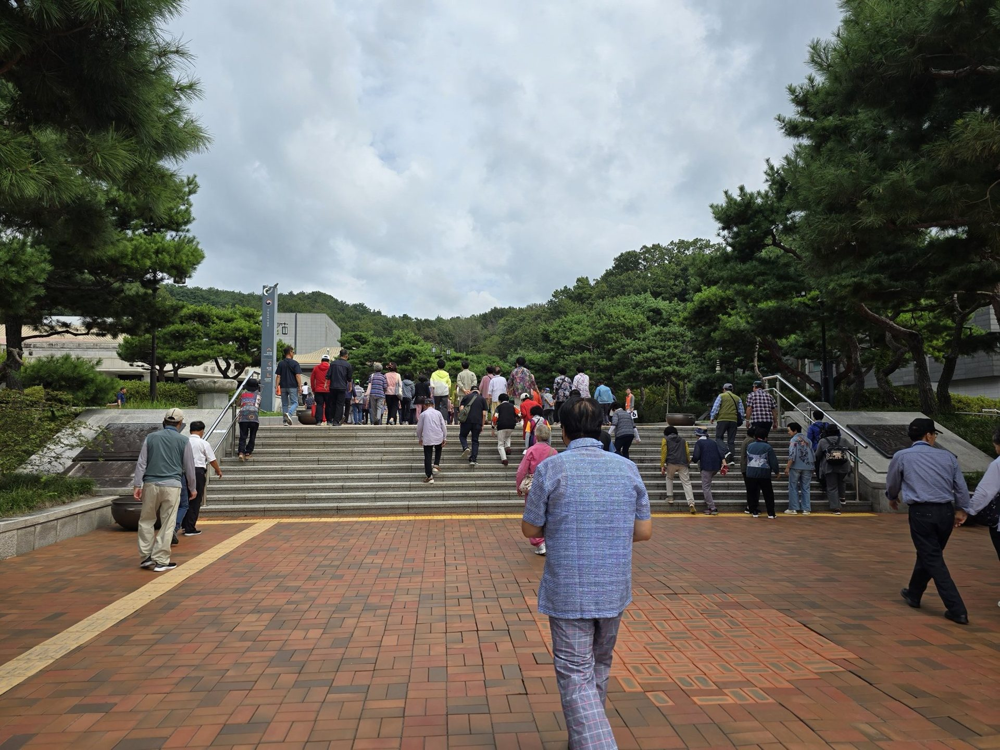
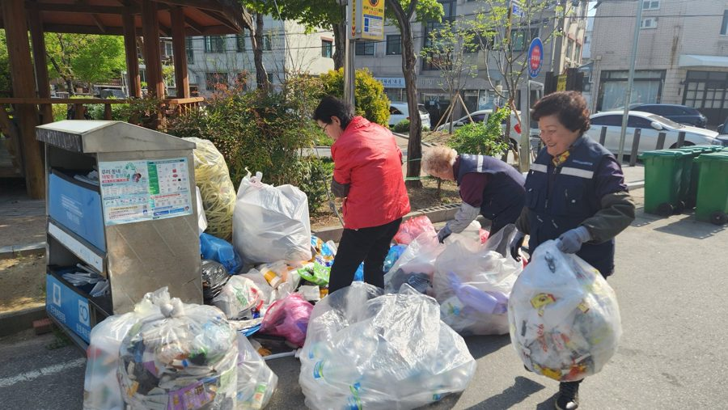
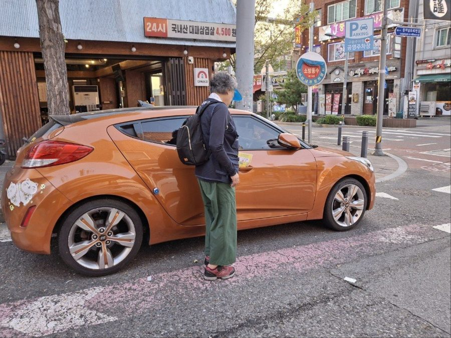
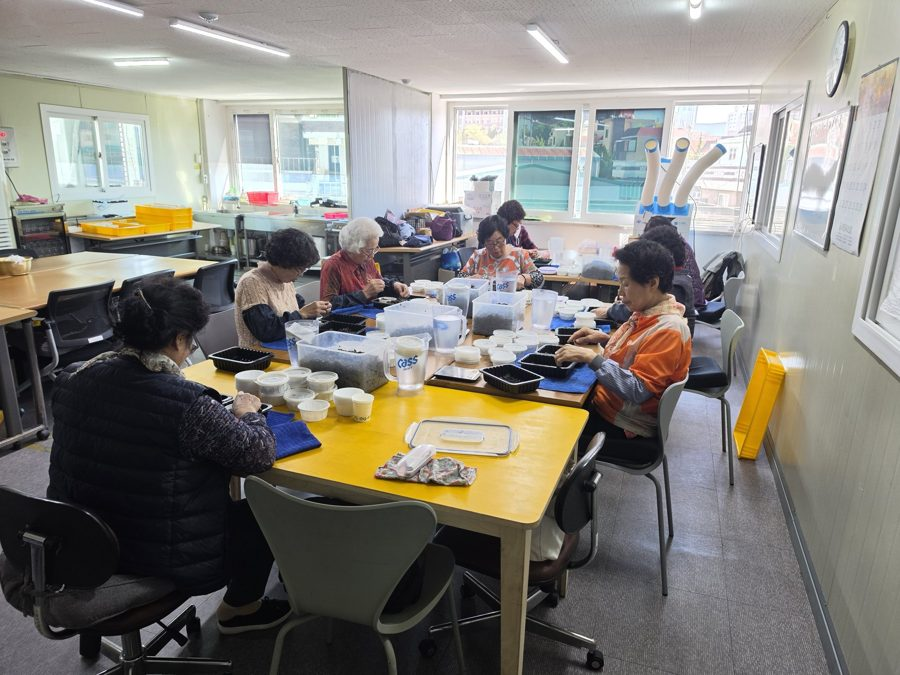
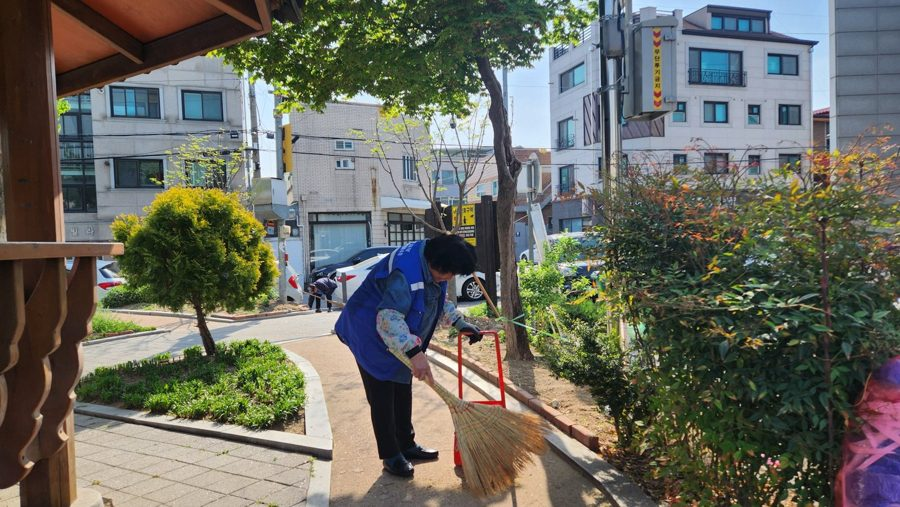
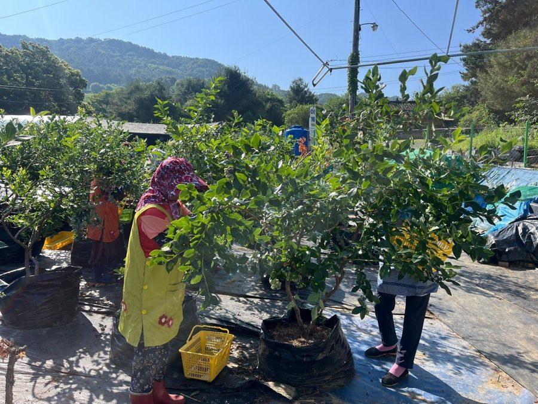
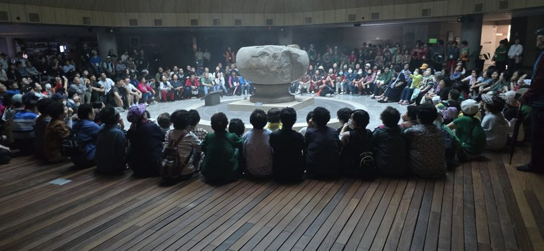
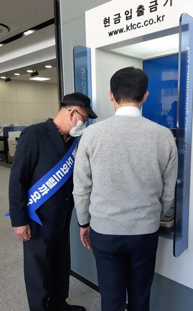
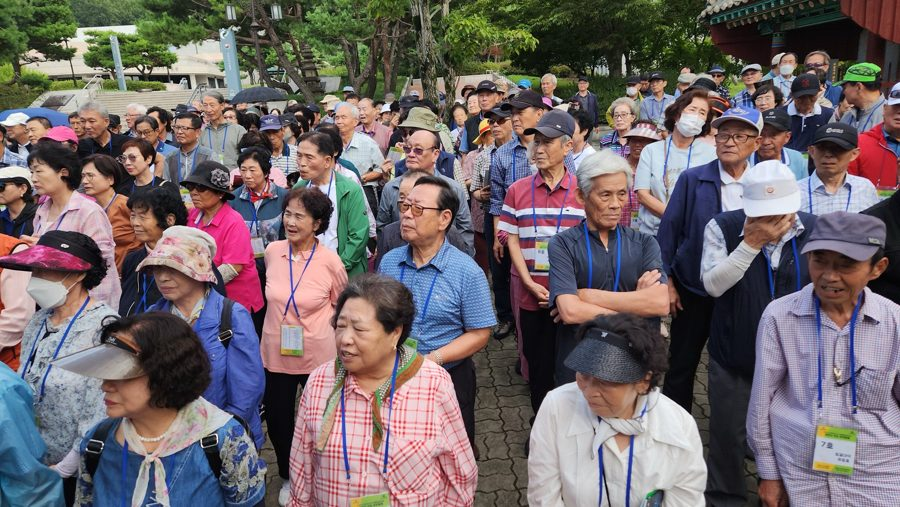

보건복지부 인가 사회적협동조합 · 대전 대덕구
사람의 일과 지역의 가치를
사람의 일과 지역의 가치를
함께 만들어갑니다.
어르신과 취업취약계층의 지속가능한 일자리,
참살이사회적협동조합이 함께합니다.

노인공익활동사업
지역사회 공익을 위한 활동
청결대덕 155명
노인역량활용사업
경력과 역량을 살린 사회서비스
돌봄·금융·소방안전 3개 사업단
공동체사업단
함께 만들고 판매하는 일자리
블루베리 농장·공동작업장
취업지원
교육 후 수요처로 취업 연계
미화·경비 등 수요처 연계일자리로 만든 생산품
전체 보기 +판매수익은 전액 취약계층 일자리를 만드는 데 다시 사용합니다.
현장 스케치
사진 더보기 +


